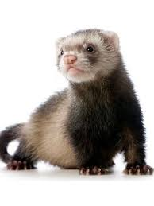
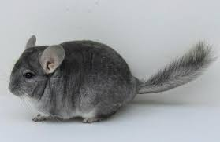
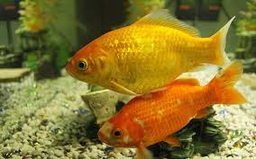
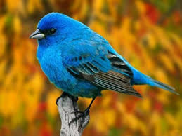
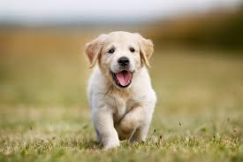
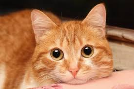

Conheça os pets
Furão
Os furões são pets muito carinhosos, brincalhões e adoram se sentir livres, mas podem morar em casas pequenas sem nenhum problema!

Chinchila
Para pessoas mais calmas, que adoram ter dias tranquilos, as chinchilas são ótimos animais de estimação. Basicamente, são extremamente dóceis.

Peixe
Os peixinhos são animais perfeitos, principalmente para pais que querem dar um bichinho de estimação para seus filhos.

Pássaro
Já os pássaros podem ser perfeitos para diversas pessoas, já que cada espécie possui diferentes características, desde as mais interativas até as mais reservadas.

Cachorro
Um dos pets mais desejados é o cachorro. Assim como os pássaros, cada raça de cães possui uma determinada característica.

Gato
Assim como os cães, os gatos são animais muito desejados e admirados. Muitas vezes, pessoas que buscam um animal independente, amável.
Fonte